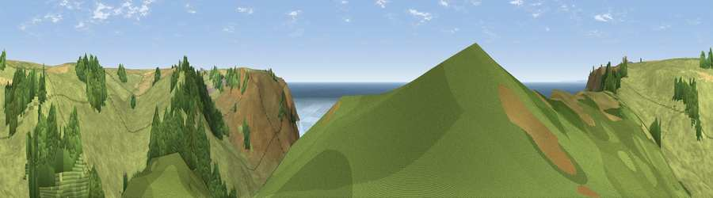

Viewpoint near Malborough
#2121 in England · top 6% of its area beats it · near Malborough · open accessWhere it is
The exact computed spot (SX 69462 37925). Click the marker for map links.
Public access: this spot lies on mapped open-access land (CRoW Act 2000) — you may roam here on foot. Computed from Natural England's CRoW access layer and OpenStreetMap rights of way — not the legal definitive map. Always verify locally.
The view, rendered

A 360° render of this exact spot computed from the terrain model, tree cover and land cover — summer colours, afternoon light, calibrated against photographs of famous viewpoints. Real trees, hedges and buildings will differ in detail.
The panorama
Grey silhouette: terrain skyline in each direction (720 bearings, Earth curvature and refraction included). Dashed green: skyline with trees (+15 m) and buildings (+8 m) as obstacles. Blue strip: how far the ground is visible on each bearing.
Where the view opens
Wedge length = distance to the farthest visible ground on that bearing (vegetation-aware). Rings at 10, 25 and 50 km.
What fills the view
47% grassland · 33% water · 18% woodland · 1% cropland
Angular shares of the visible panorama (visual magnitude), not map area. Landscape diversity 0.48 (0–1 Shannon).
Key numbers
More beautiful places nearby
The staircase of upgrades: each row has a higher view potential than everything closer. Driving times are estimates from straight-line distance, calibrated against real road routing — check an actual route before setting out.
| Place | Direction | Drive | Score |
|---|---|---|---|
| Viewpoint near Galmpton | NNW · 1 km | ~2 min | 76.4 |
| Viewpoint near Malborough | SE · 1 km | ~3 min | 79.4 |
| Viewpoint near Hope | WNW · 2 km | ~4 min | 84.4 |
| Viewpoint near East Prawle | ESE · 7 km | ~15 min | 84.6 |
| Pencarrow Head | WNW · 56 km | ~78 min | 86.0 |
| Viewpoint near Stenalees | WNW · 72 km | ~95 min | 88.0 |
| Viewpoint near Crackington Haven | NW · 80 km | ~104 min | 88.1 |
| Golden Cap | NE · 89 km | ~114 min | 88.7 |
50.22688, -3.83142 · source: screening · position refined by local search. Computed location — check access rights before visiting.